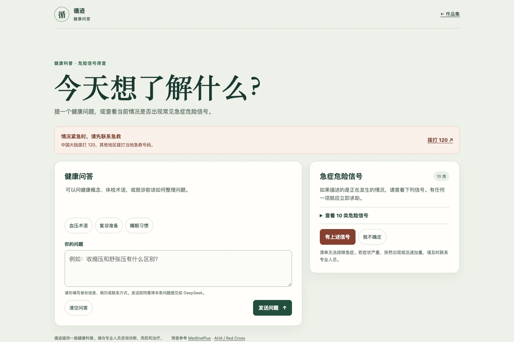
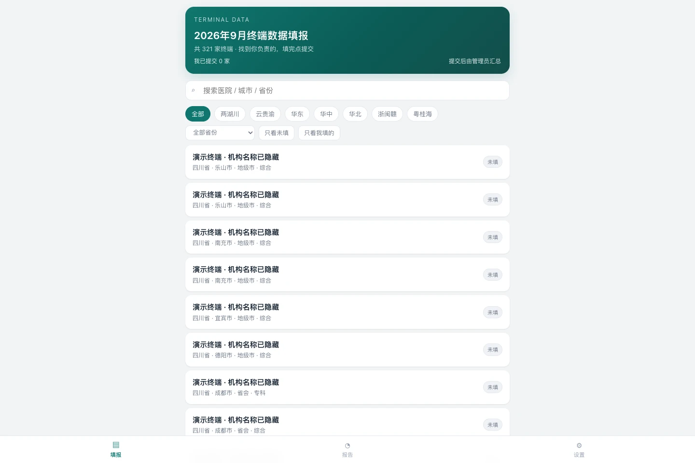

循证 · 药物安全助手
让药物安全问题，回答有据可循。
方璐 / AI PRODUCT BUILDER
把医学证据，变成可用的 AI 产品。
公共卫生与统计学 × 产品思考 × AI 应用开发
探索项目 ↓SELECTED WORKS
医学证据、健康行动与业务流程。
四个项目，四种真实场景。
让药物安全问题，回答有据可循。

从文献证据，读懂诊疗与市场机会。

打开网页提问，也可以先查看常见急症危险信号。

让分散填报，成为有序的数据流程。
MORE EXPLORATIONS
更多研究工具与交互实验。
ABOUT / 方璐
以医学与数据为基础，
在产品与工程之间推进想法。
浙江大学医学院
流行病与卫生统计学硕士 · 2024—2027
EXPERIENCE
AI 产品实习生 专业数据接入与治理
中央市场部 · 产品专员 终端数据分析与数字化流程
产品经理助理 健康产品需求与体验优化
LET’S CONNECT
欢迎交流 AI 产品、医学证据与数字化实践。
查看 GitHub 项目 ↗面向 AI 产品与应用开发的机会，欢迎通过 GitHub 联系。